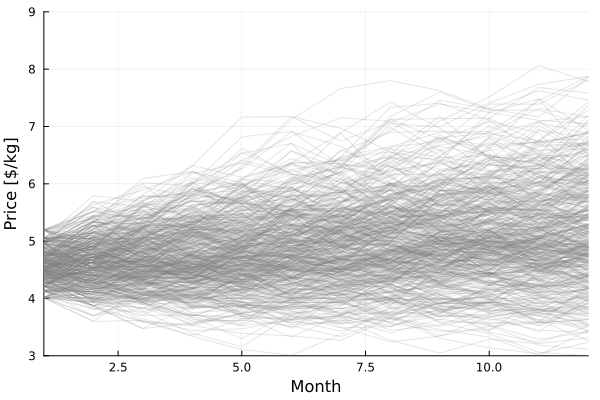
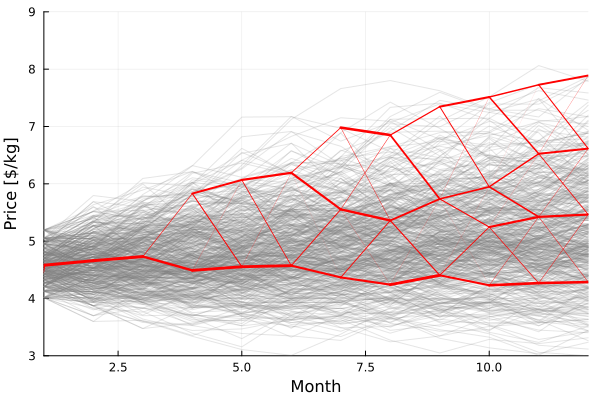
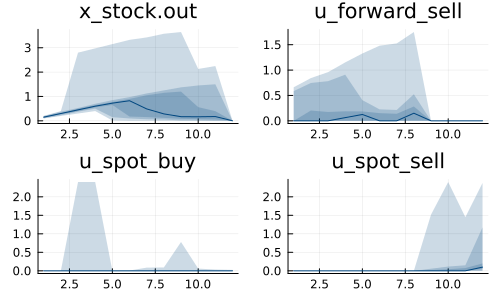

Example: the milk producer
This tutorial was generated using Literate.jl. Download the source as a .jl file. Download the source as a .ipynb file.
The purpose of this tutorial is to demonstrate how to fit a Markovian policy graph to a univariate stochastic process.
This tutorial uses the following packages:
using SDDPimport HiGHSimport PlotsBackground
A company produces milk for sale on a spot market each month. The quantity of milk they produce is uncertain, and so too is the price on the spot market. The company can store unsold milk in a stockpile of dried milk powder.
The spot price is determined by an auction system, and so varies from month to month, but demonstrates serial correlation. In each auction, there is sufficient demand that the milk producer finds a buyer for all their milk, regardless of the quantity they supply. Furthermore, the spot price is independent of the milk producer (they are a small player in the market).
The spot price is highly volatile, and is the result of a process that is out of the control of the company. To counteract their price risk, the company engages in a forward contracting programme.
The forward contracting programme is a deal for physical milk four months in the future.
The futures price is the current spot price, plus some forward contango (the buyers gain certainty that they will receive the milk in the future).
In general, the milk company should forward contract (since they reduce their price risk), however they also have production risk. Therefore, it may be the case that they forward contract a fixed amount, but find that they do not produce enough milk to meet the fixed demand. They are then forced to buy additional milk on the spot market.
The goal of the milk company is to choose the extent to which they forward contract in order to maximise (risk-adjusted) revenues, whilst managing their production risk.
A stochastic process for price
It is outside the scope of this tutorial, but assume that we have gone away and analysed historical data to fit a stochastic process to the sequence of monthly auction spot prices.
One plausible model is a multiplicative auto-regressive model of order one, where the white noise term is modeled by a finite distribution of empirical residuals. We can simulate this stochastic process as follows:
function simulator() residuals = [0.0987, 0.199, 0.303, 0.412, 0.530, 0.661, 0.814, 1.010, 1.290] residuals = 0.1 * vcat(-residuals, 0.0, residuals) scenario = zeros(12) y, μ, α = 4.5, 6.0, 0.05 for t in 1:12 y = exp((1 - α) * log(y) + α * log(μ) + rand(residuals)) scenario[t] = clamp(y, 3.0, 9.0) end return scenarioendsimulator()12-element Vector{Float64}:
4.757210658651313
4.43650275749442
4.885936870962876
5.355001442119976
5.168163474301859
5.206873093339154
5.295929464708526
5.693240240808871
5.537834525396578
5.335653342433565
5.592792678488815
5.253490869833177It may be helpful to visualize a number of simulations of the price process:
plot = Plots.plot( [simulator() for _ in 1:500]; color = "gray", opacity = 0.2, legend = false, xlabel = "Month", ylabel = "Price [\$/kg]", xlims = (1, 12), ylims = (3, 9),)
The prices gradually revert to the mean of $6/kg, and there is high volatility.
We can't incorporate this price process directly into SDDP.jl, but we can fit a SDDP.MarkovianGraph directly from the simulator:
graph = SDDP.MarkovianGraph(simulator; budget = 30, scenarios = 10_000);Here budget is the number of nodes in the policy graph, and scenarios is the number of simulations to use when estimating the transition probabilities.
The graph contains too many nodes to be show, but we can plot it:
for ((t, price), edges) in graph.nodes for ((t′, price′), probability) in edges Plots.plot!( plot, [t, t′], [price, price′]; color = "red", width = 3 * probability, ) endendplot
That looks okay. Try changing budget and scenarios to see how different Markovian policy graphs can be created.
Model
Now that we have a Markovian graph, we can build the model. See if you can work out how we arrived at this formulation by reading the background description. Do all the variables and constraints make sense?
model = SDDP.PolicyGraph( graph; sense = :Max, upper_bound = 1e2, optimizer = HiGHS.Optimizer,) do sp, node # Decompose the node into the month (::Int) and spot price (::Float64) t, price = node::Tuple{Int,Float64} # Transactions on the futures market cost 0.01 c_transaction = 0.01 # It costs the company +50% to buy milk on the spot market and deliver to # their customers c_buy_premium = 1.5 # Buyer is willing to pay +5% for certainty c_contango = 1.05 # Distribution of production Ω_production = range(0.1, 0.2; length = 5) c_max_production = 12 * maximum(Ω_production) # x_stock: quantity of milk in stock pile @variable(sp, 0 <= x_stock, SDDP.State, initial_value = 0) # x_forward[i]: quantity of milk for delivery in i months @variable(sp, 0 <= x_forward[1:4], SDDP.State, initial_value = 0) # u_spot_sell: quantity of milk to sell on spot market @variable(sp, 0 <= u_spot_sell <= c_max_production) # u_spot_buy: quantity of milk to buy on spot market @variable(sp, 0 <= u_spot_buy <= c_max_production) # u_spot_buy: quantity of milk to sell on futures market c_max_futures = t <= 8 ? c_max_production : 0.0 @variable(sp, 0 <= u_forward_sell <= c_max_futures) # ω_production: production random variable @variable(sp, ω_production) # Forward contracting constraints: @constraint(sp, [i in 1:3], x_forward[i].out == x_forward[i+1].in) @constraint(sp, x_forward[4].out == u_forward_sell) # Stockpile balance constraint @constraint( sp, x_stock.out == x_stock.in + ω_production + u_spot_buy - x_forward[1].in - u_spot_sell ) # The random variables. `price` comes from the Markov node # # !!! warning # The elements in Ω MUST be a tuple with 1 or 2 values, where the first # value is `price` and the second value is the random variable for the # current node. If the node is deterministic, use Ω = [(price,)]. Ω = [(price, p) for p in Ω_production] SDDP.parameterize(sp, Ω) do ω # Fix the ω_production variable fix(ω_production, ω[2]) @stageobjective( sp, # Sales on spot market ω[1] * (u_spot_sell - c_buy_premium * u_spot_buy) + # Sales on futures smarket (ω[1] * c_contango - c_transaction) * u_forward_sell ) return end returnendA policy graph with 30 nodes.
Node indices: (1, 4.57934967323029), ..., (12, 7.8892560035530845)
Here's the graph:
# We need `open = false` to build the documentation. Remove if running locally.SDDP.plot(model, "model_milk_producer.html"; open = false)Training a policy
Now we have a model, we train a policy. The SDDP.SimulatorSamplingScheme is used in the forward pass. It generates an out-of-sample sequence of prices using simulator and traverses the closest sequence of nodes in the policy graph. When calling SDDP.parameterize for each subproblem, it uses the new out-of-sample price instead of the price associated with the Markov node.
SDDP.train( model; time_limit = 20, risk_measure = 0.5 * SDDP.Expectation() + 0.5 * SDDP.AVaR(0.25), sampling_scheme = SDDP.SimulatorSamplingScheme(simulator),)-------------------------------------------------------------------
SDDP.jl (c) Oscar Dowson and contributors, 2017-26
-------------------------------------------------------------------
problem
nodes : 30
state variables : 5
scenarios : 9.14062e+11
existing cuts : false
options
solver : serial mode
risk measure : A convex combination of 0.5 * SDDP.Expectation() + 0.5 * SDDP.AVaR(0.25)
sampling scheme : SDDP.SimulatorSamplingScheme{typeof(Main.simulator)}
subproblem structure
VariableRef : [15, 15]
AffExpr in MOI.EqualTo{Float64} : [5, 5]
VariableRef in MOI.GreaterThan{Float64} : [8, 9]
VariableRef in MOI.LessThan{Float64} : [4, 4]
numerical stability report
matrix range [1e+00, 1e+00]
objective range [1e+00, 1e+01]
bounds range [2e+00, 1e+02]
rhs range [0e+00, 0e+00]
-------------------------------------------------------------------
iteration simulation bound time (s) solves pid
-------------------------------------------------------------------
1 -5.958803e+01 6.046634e+01 1.349847e+00 162 1
67 9.385801e+00 7.941727e+00 2.362435e+00 10854 1
122 7.798820e+00 7.936783e+00 3.364645e+00 19764 1
169 9.471945e+00 7.935805e+00 4.367740e+00 27378 1
212 1.014770e+01 7.935438e+00 5.375139e+00 34344 1
253 1.003964e+01 7.935434e+00 6.381466e+00 40986 1
291 9.202076e+00 7.935339e+00 7.390285e+00 47142 1
326 1.107491e+01 7.935155e+00 8.402229e+00 52812 1
361 9.922187e+00 7.935025e+00 9.402452e+00 58482 1
516 1.076919e+01 7.934978e+00 1.440245e+01 83592 1
653 1.106097e+01 7.934743e+00 1.943591e+01 105786 1
668 8.578425e+00 7.934743e+00 2.001421e+01 108216 1
-------------------------------------------------------------------
status : time_limit
total time (s) : 2.001421e+01
total solves : 108216
best bound : 7.934743e+00
numeric issues : 0
-------------------------------------------------------------------We're intentionally terminating the training early so that the documentation doesn't take too long to build. If you run this example locally, increase the time limit.
Simulating the policy
When simulating the policy, we can also use the SDDP.SimulatorSamplingScheme.
simulations = SDDP.simulate( model, 200, Symbol[:x_stock, :u_forward_sell, :u_spot_sell, :u_spot_buy]; sampling_scheme = SDDP.SimulatorSamplingScheme(simulator),);To show how the sampling scheme uses the new out-of-sample price instead of the price associated with the Markov node, compare the index of the Markov state visited in stage 12 of the first simulation:
simulations[1][12][:node_index](12, 5.46408083702012)to the realization of the noise (price, ω) passed to SDDP.parameterize:
simulations[1][12][:noise_term](5.470449411103562, 0.1)Visualizing the policy
Finally, we can plot the policy to gain insight (although note that we terminated the training early, so we should run the re-train the policy for more iterations before making too many judgements).
plot = Plots.plot( SDDP.publication_plot(simulations; title = "x_stock.out") do data return data[:x_stock].out end, SDDP.publication_plot(simulations; title = "u_forward_sell") do data return data[:u_forward_sell] end, SDDP.publication_plot(simulations; title = "u_spot_buy") do data return data[:u_spot_buy] end, SDDP.publication_plot(simulations; title = "u_spot_sell") do data return data[:u_spot_sell] end; layout = (2, 2),)
Next steps
- Train the policy for longer. What do you observe?
- Try creating different Markovian graphs. What happens if you add more nodes?
- Try different risk measures